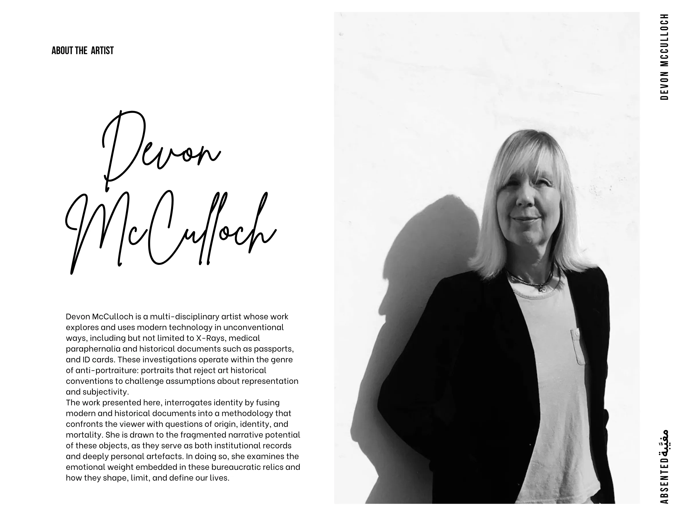

Devon
McCulloch
Devon McCulloch is a multi-disciplinary artist whose work explores and uses modern technology in unconventional ways, including but not limited to X-Rays, medical paraphernalia and historical documents such as passports, and ID cards. These investigations operate within the genre of anti-portraiture: portraits that reject art historical conventions to challenge assumptions about representation and subjectivity.
The work presented here, interrogates identity by fusing modern and historical documents into a methodology that confronts the viewer with questions of origin, identity, and mortality. She is drawn to the fragmented narrative potential of these objects, as they serve as both institutional records and deeply personal artefacts. In doing so, she examines the emotional weight embedded in these bureaucratic relics and how they shape, limit, and define our lives.
ABOUT THE ARTIST
